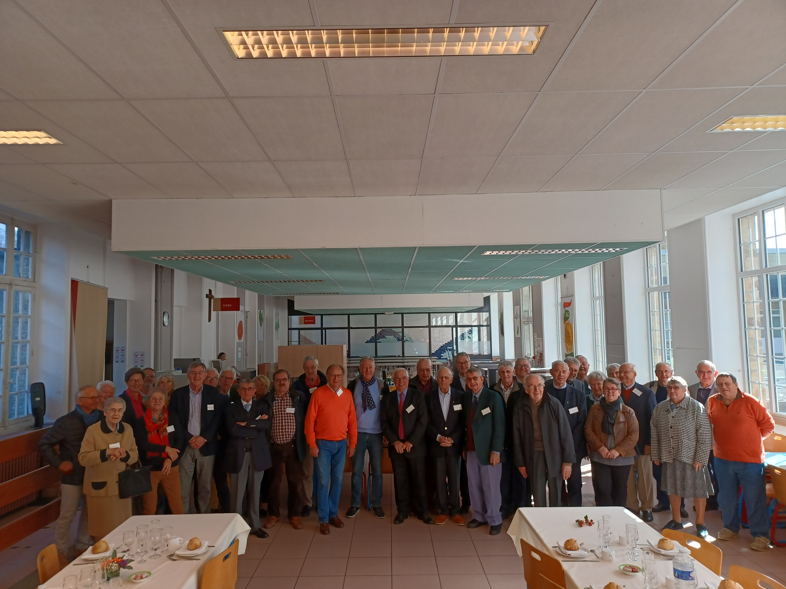
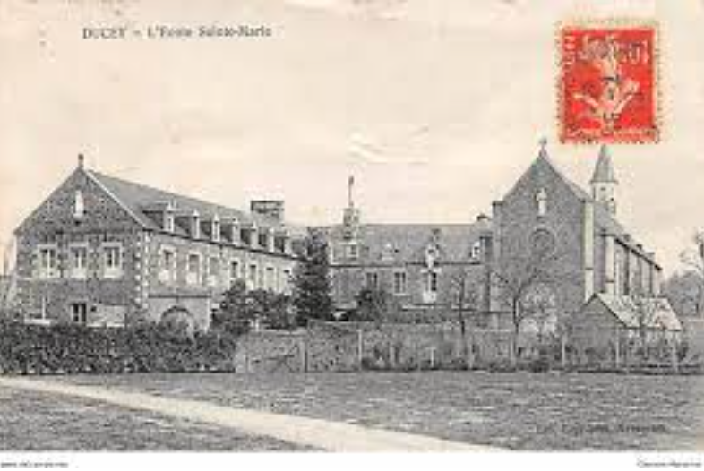

Nos rencontres
Sous titre

Texte.
Présentation de l'association |
|||
Qui sommes-nous ? |
|||
| Nous somme une association réunissant les anciens élèves du lycée Notre Dame de La Providence basée l'Abbaye-Blanche de Mortain, de Sainte-Marie de Ducey et de l'Institut Notre-Dame d'Avranches |
|||
Qui faisons-nous ? |
|||
| Jusqu’à la fin des années 1960, les élèves venaient du Sud-Manche et des départements limitrophes. « Quasiment tous étaient internes sauf les quelques externes comme moi dont les parents habitaient Avranches », se souvient Jean Bouteloup, administrateur de l’association. Après les cours, les jeunes, qui passaient sept années ensemble, se divertissaient grâce aux nombreuses activités proposées par l’association des anciens élèves. « La musique, le théâtre, le sport notamment. Lors de l’assemblée générale de l’association, il y avait des concerts et des pièces de théâtre proposés aux anciens. » Aujourd'hui cette association sert principalement à resserer les liens d'affection et les rapports |
 |
Histoire de l'association |
|||
Quand l'association a-t-elle était créer ? |
|||
|  | En réalité, il faut remonter bien avant la fondation de l’Institut en 1913, mais en 1821, à la création du petit séminaire dans les locaux multi-séculaires de l’Abbaye Blanche à Mortain. IL faudrait citer les héroïques « pères fondateurs », dont l’Abbé Dary (1768-1850), dynamique et entreprenant, à l’initiative du projet, le chanoine Ameline (1817-1899) grand bâtisseur, le chanoine Dubois (1838-1905), pédagogue et organisateur, le chanoine Godefroy (1858-1922) qui dut appliquer les lois de séparation des Eglises et de l’Etat, fermer en plein hiver, le 13 décembre 1906 le petit séminaire de Mortain, le replier difficilement dans les locaux de l’Ecole Sainte Marie à Ducey et lancer en 1911 la construction de l’Institut Notre Dame, devenu lycée en 2001.L’association est officiellement créé le 18 novembre 1937 . |
Nos rencontres |
|||
Sous titre |
|||
| |
Texte. |
Partie 4 |
|||
Sous titre |
|||
| |
Texte. |
Contact |
||